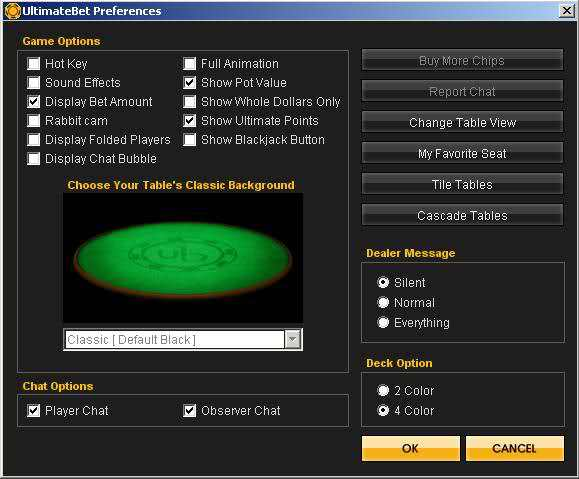
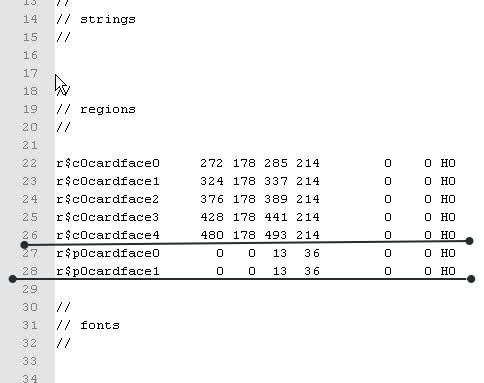
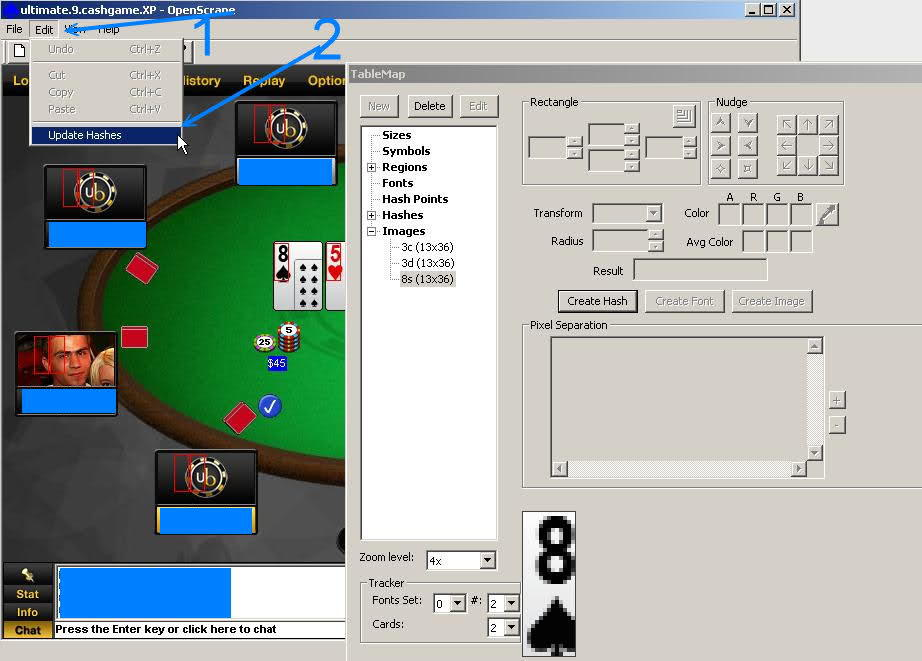

↓Scraping In Practice
How Do I Make A Map
This tutorial has been contributed by Ares® at http://www.maxinmontreal.com/forums/viewtopic.php?f=117&t=6547.
Here I will show you how I make a map from start to finish. I do not know if this is the right way, but this is what I do. At first we check the version to avoid any surürises if the casino updates. These casino updates rarely affect the table-display, but sometimes they do and throw the scraper off.

Then we choose proper settings amd disable useless features like avatars and animations that could affect scraping. I also enable other features that ease scraping, especially the four-colour-deck.

Then we choose a nice table-view, the simpler the better.

This is how our poker table looks with our preferred settings

Checking this table display, we notice some good things and also some possible problems to care about:
- fonts are two colors, we have to use pXname / uXname for the names and pXbalance / uXbalance for the balance. In similar cases we might consider to use the background-colour in combination with a negative radius to accept both foreground-colours at once, but here we have two different background-colours, therefore this alternative approach can hardly be used.
- the dealer button is large and well positioned
- the cards are always exactly the same. Therefore we can use hashes, images or fuzzy fonts, but I will use hashes, as they are the most easy ones and the fastest.
- it might happen, that large chip-stacks occlude opponents card-backs.
Scraping Cards
There are three methods to collect cards
- using hashes, i.e. using the image to compute a number and then doing a quick search for a match. This is the most simple method, but it requires that each card gets displayed exactly identically, at all times and at all possible places. We will ise hashes here, as Full-Tilt is a bot-friendly casino from a scraping point of view.
- using images. This approach is similar to the one above, but it requires more resources. This approach will be discussed in another chapter of this manual.
- using fuzzy fonts. This is “true screen-reading”, somewhat more complicated, but it is possible to recognize cards that get displayed each time a little bit differently. Again we will discuss this method in another chapter.
So let’s start with the card-scraping. We have 5 common-cards and 2 hole-cards in the situation below.

As you can see I pre-created 5 regions for the common cards, but in order to be able to define their size and position we have to care about my hole-cards. One of them is partially occluded and we would like to recognize all cards with the same hashes, therefore this card defines the size of our scraping region.
width 381 - 368 = 13 height 431 - 395 = 36
Please have a look at the region marked by arrow 3.The left border of the region matches the border of the card, but at the top is a free distance of one pixel. That’s how we will align the regions for the common cards too.

Next step: we take the size of the card-scraping region (13x36) and apply it to the common cards. All regions now appear with the correct size. but in the upper left corner (0, 0), as the position is still undefined (please see the blue arrow). Now we select these regions and click-drag them to the right places

Now the common-cards are done. Always make sure that we use the same alignment for all cards.

Now we check the alignment of the common cards. All regions should have the same height. The space between two regions should be equal. If the position of the fourth card can change (Ipoker, CakePoker) we should use fuzzy fonts.

After I have aligned the common cards I will create and align the cards for all players. Once this got done, I will seek a play money table, the most loose one I can get. This is one of the secrets of quick TM creation; I already managed to get 20 cards at once. So now I will create the regions p0cardface0 / p0cardface1. In OpenSrape I already created the region for the first player (player0). You can see that I chose the correct size of 13x36 and also chose hash0 transform. Now I save the tablemap and close OpenScrape to clone these regions with an editor..

Here I opened the file in a text editor. You can see the two regions that we created for the first player.

Now I copy and paste the region’s of the first player several times...

...and rename the cloned ones, so that we get cardfaces for all 9 players (p0...p8).

(On a side-note: cloning regions became more easy in the mean-time. Just create all regions for player0 and the balance-regions for all other players, plus the first common cards. Then click Menu → Edit → Clone Regions and all other regions will be created and even aligned to reasonable places. All you have to do is a little bit of fine-tuning the positions.)
In the next screenshot you see all cloned regions in OpenScrape, ready for positioning by drag and drop.

Be careful!

Today we received a gift from Ultimatebet. Their client has been updated, but it was only an update of internal functions, nothing that affected the user-interface. This is mostly the case with casino updates and one of the benefits of scraping: updates might happen often, but the interface changes rarely and mostly only slightly. But always be aware of updates.
Now let’s continue with the good work: drag and drop. Select the region you want to move, in the example "p7cardface0". The region will be flashing in yellow. Press the "Shift" key, put the mouse pointer over the region, click and move the region to the desired place. placing conventions: player0 sits at 1-o-clocl-position, the other players are seated clockwise..

Do you notice the cards marked with arrows? They are not aligned properly. You can check this if you select them while they show cards.

We have to fine-tune these regions, so that all are aligned properly.

|

|

|

|

|
Checking alignment again. Pay close attention; if one region is misaligned, all data collected from this region will be wrong.

Now we start collecting cards
- select the region
- click "Create Image"
- choose a good name like “8s”
- click "OK"
Repeat this process until all cards are collected.

Creating hashes — step 1
- select image (8s)
- click "Creat Hash"
- select "Hash 0"
- click "OK"

Creating hashes — step 2
- Click Menu → Edit
- Click Update Hashes

Now OpenScrape already recognizes the card "8s"

As the next step we would like to create the regions "pXbet", but the picture below shows an occlusion of "bets" by chip-stacks. Scraping the bet-amount is the preferred solution, as it is easy and doesn’t utilize the CPU much. Unfortunately the occlusions prevents scraping the bet-amounts directly in our case. Therefore we have to use the alternative "chip scraping", i.e. recognizing and counting chip-stacks. We will use the regions pXchip00, pXchip01 and pXchip10 for players, i.e. the bottom chip of the left-most stack, the 2nd-chip in the same stack and the bottom-chip in the 2nd stack. All other chgip positions are then welldefined. The common pots work similar: c0potXchip00, c0potXchip01, c0potXchip10 for pots.


the timer of this Player8 covering the chip, I will reduce the size to 7x22
open the TM in a text editor and create the new regions

The best place to align the pXchipXX is in blinds, because you get to see here usually single chips

- chip should be collected as a image - the name of the picture must have a "$" at the beginning (examples: $0.01, $0.25, $1, $5, $100000)

Hash Points
To use any other kind of hash, excluding "hash0" must create new hash points. To this we must use the "Hash Point Graphical Editor"
1 - click Hash Points 2 - click edit 3 - select the hash 4 - select one chip image 5 - zoom to 16x
click where it marked with arrows
see created two new hash points to the "hash1" click "OK"
I was forced to change the position of the hash point, the chip of One Dollar was causing error.
Re: How do I make a map PostPosted: Sat Dec 06, 2008 7:27 pm Offline Posts Too Much User avatar
Joined: Wed Jan 02, 2008 5:04 am Posts: 1311 Location: Portugal direction of increased chip
order of alignment
pXchip00 is the first, pXchip01 always on top and pXchip10 always in the direction of increase
pXchipXX aligned
Connecting the table
to connect a table need only 2 things - clientsize - titletext
clientsize
OpenScrape provides the size of table, create the "clientsize" and define the size
titletext
here we see 3 title NL, FL, PL Always look for a string that is in every title the strig "Holdem" is equal in all
we add the string "Holdem"
to verify that the "bets" work properly we need to add the number of players
Re: How do I make a map
Common Pots
for the "common pots" are used these 3 symbols c0potXchip00, c0potXchip01 and c0potXchip10.
most sites has 3 pots
This site has 5 pots
*the fifth pot does not appear in the picture, only show the location